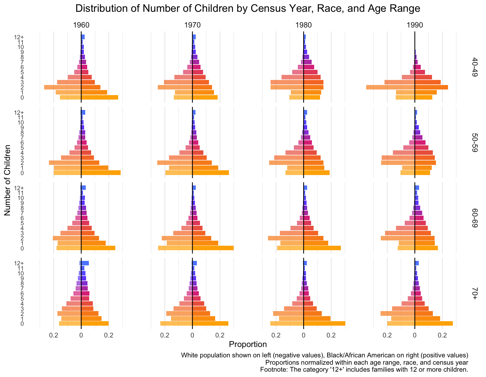
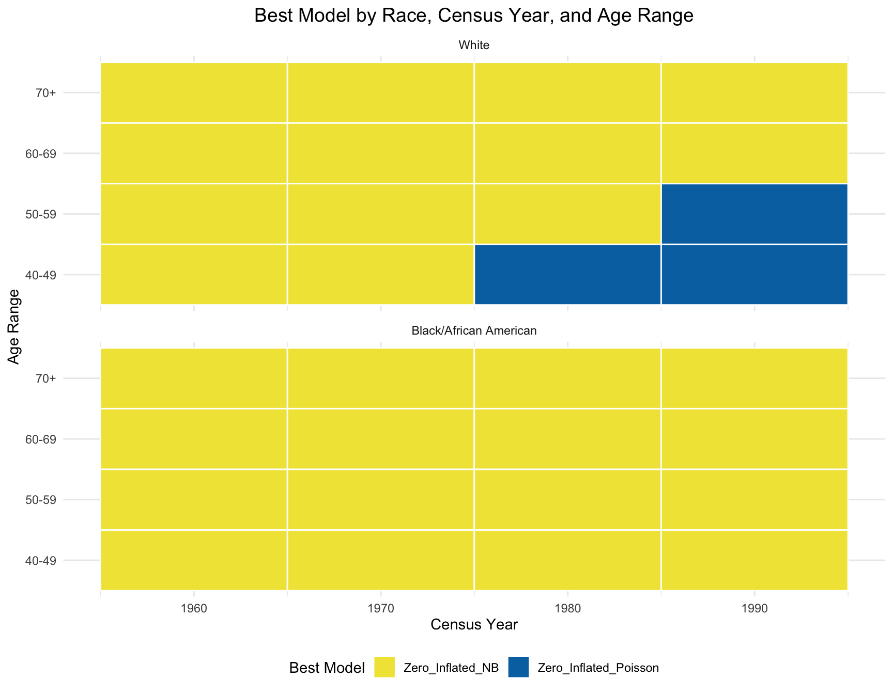
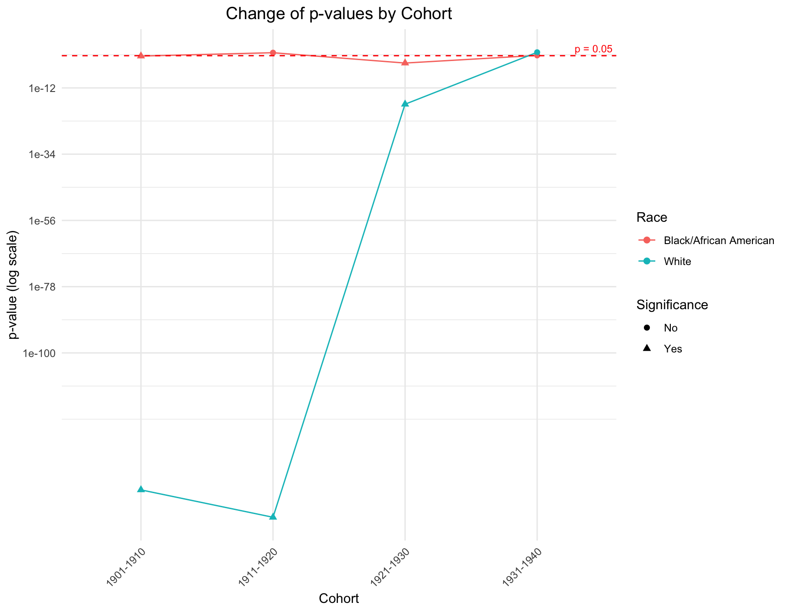
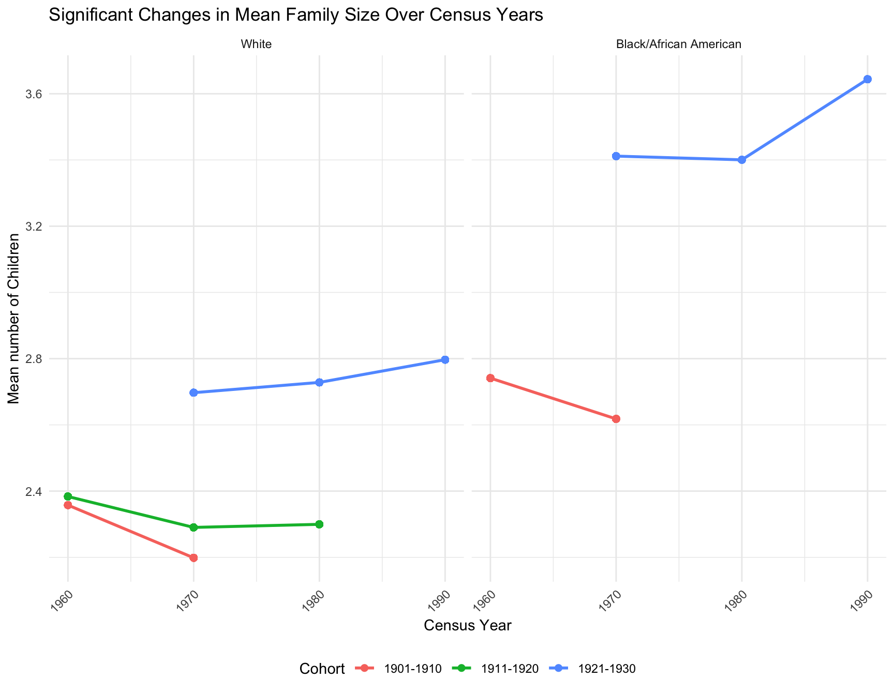
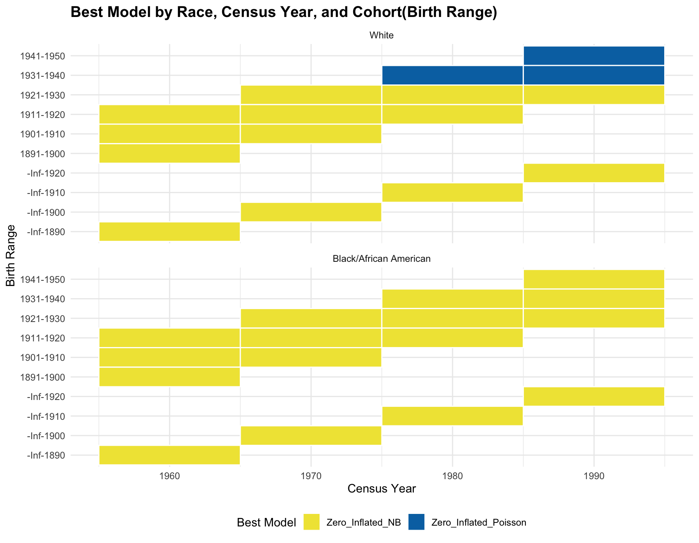
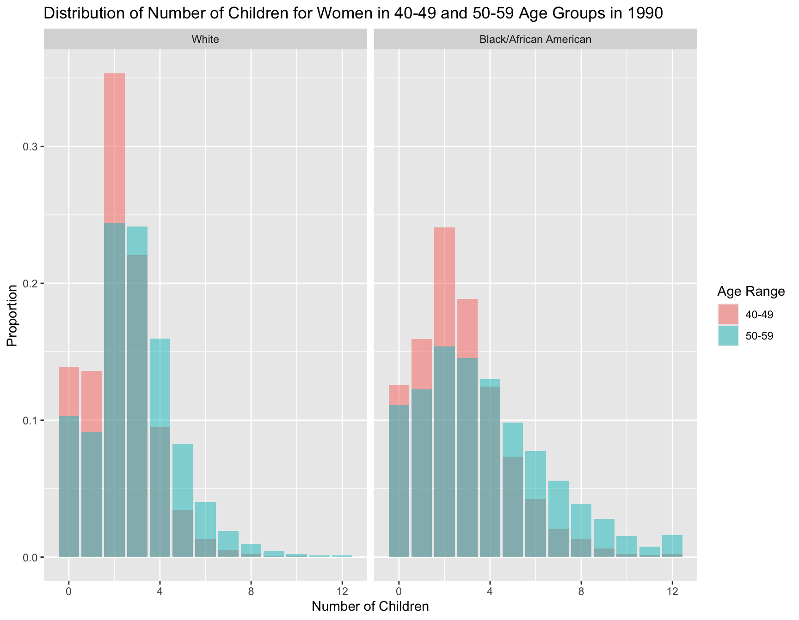
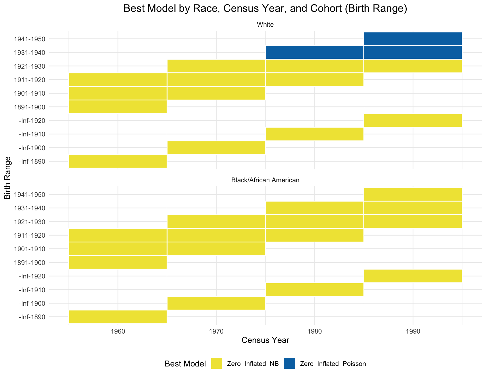
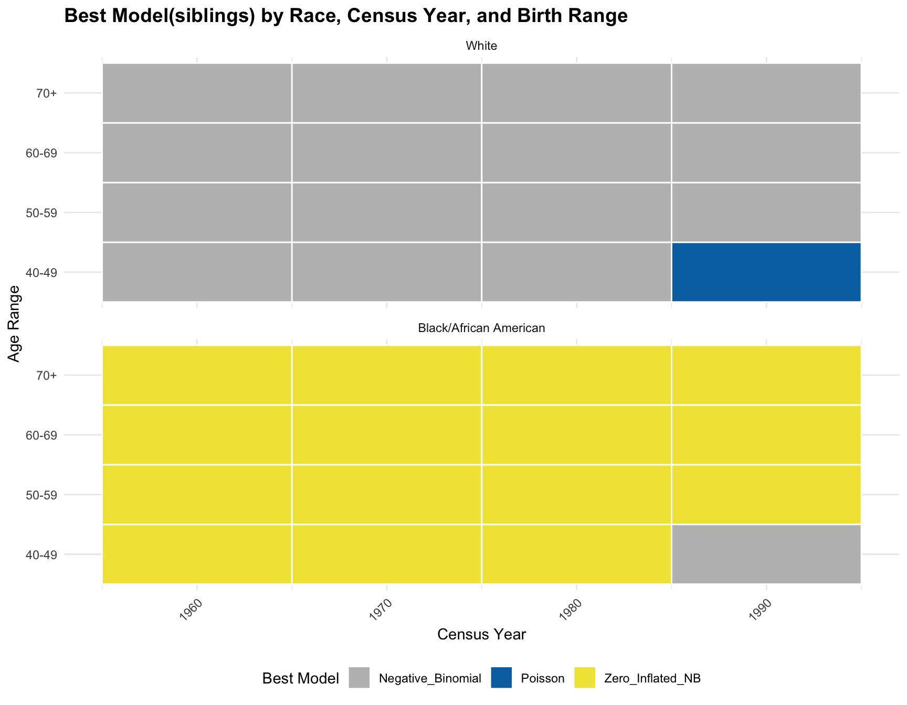
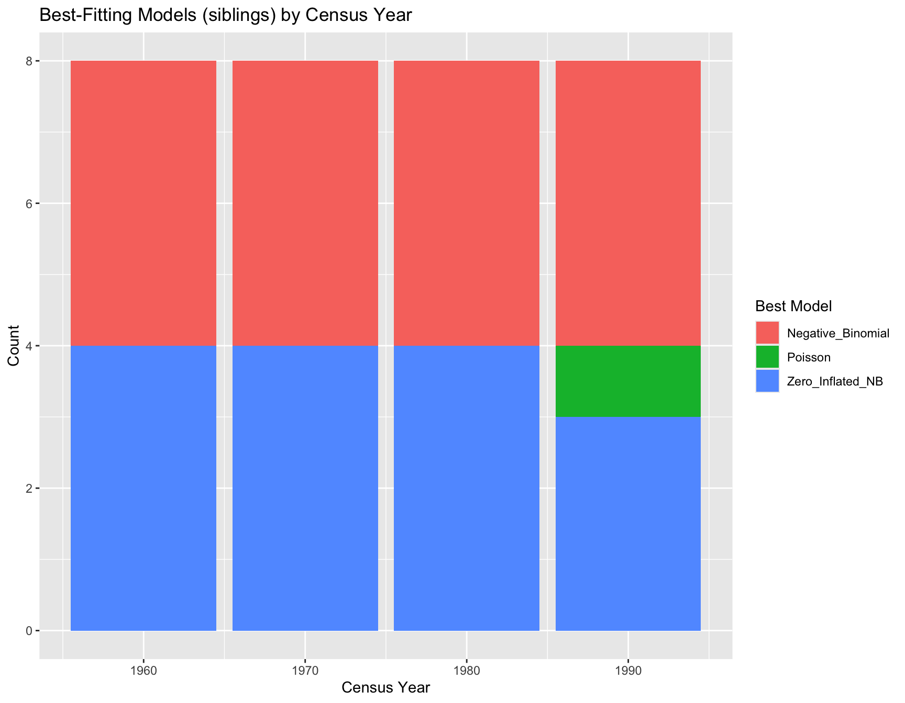

Estimating Differences in the Distribution of First-degree Relatives
Manqing Lin, Tina Lasisi
2025-01-20 15:59:11
Last updated: 2025-01-20
Checks: 6 1
Knit directory: PODFRIDGE/
This reproducible R Markdown analysis was created with workflowr (version 1.7.1). The Checks tab describes the reproducibility checks that were applied when the results were created. The Past versions tab lists the development history.
The R Markdown file has unstaged changes. To know which version of
the R Markdown file created these results, you’ll want to first commit
it to the Git repo. If you’re still working on the analysis, you can
ignore this warning. When you’re finished, you can run
wflow_publish to commit the R Markdown file and build the
HTML.
Great job! The global environment was empty. Objects defined in the global environment can affect the analysis in your R Markdown file in unknown ways. For reproduciblity it’s best to always run the code in an empty environment.
The command set.seed(20230302) was run prior to running
the code in the R Markdown file. Setting a seed ensures that any results
that rely on randomness, e.g. subsampling or permutations, are
reproducible.
Great job! Recording the operating system, R version, and package versions is critical for reproducibility.
Nice! There were no cached chunks for this analysis, so you can be confident that you successfully produced the results during this run.
Great job! Using relative paths to the files within your workflowr project makes it easier to run your code on other machines.
Great! You are using Git for version control. Tracking code development and connecting the code version to the results is critical for reproducibility.
The results in this page were generated with repository version 23ba6ad. See the Past versions tab to see a history of the changes made to the R Markdown and HTML files.
Note that you need to be careful to ensure that all relevant files for
the analysis have been committed to Git prior to generating the results
(you can use wflow_publish or
wflow_git_commit). workflowr only checks the R Markdown
file, but you know if there are other scripts or data files that it
depends on. Below is the status of the Git repository when the results
were generated:
Ignored files:
Ignored: .DS_Store
Ignored: .Rhistory
Ignored: .Rproj.user/
Ignored: analysis/.Rhistory
Ignored: analysis/figure/
Ignored: data/.DS_Store
Unstaged changes:
Modified: analysis/relative-distribution.Rmd
Note that any generated files, e.g. HTML, png, CSS, etc., are not included in this status report because it is ok for generated content to have uncommitted changes.
These are the previous versions of the repository in which changes were
made to the R Markdown (analysis/relative-distribution.Rmd)
and HTML (docs/relative-distribution.html) files. If you’ve
configured a remote Git repository (see ?wflow_git_remote),
click on the hyperlinks in the table below to view the files as they
were in that past version.
| File | Version | Author | Date | Message |
|---|---|---|---|---|
| Rmd | 23ba6ad | linmatch | 2025-01-20 | update final report |
| Rmd | 415f30a | linmatch | 2025-01-14 | hide code chunk and unnecessary output |
| html | 415f30a | linmatch | 2025-01-14 | hide code chunk and unnecessary output |
| Rmd | 159a638 | linmatch | 2025-01-13 | Update relative-distribution.Rmd |
| Rmd | 5280afb | linmatch | 2025-01-13 | fix test mean family size |
| Rmd | 9778698 | linmatch | 2025-01-09 | update |
| html | 9778698 | linmatch | 2025-01-09 | update |
| Rmd | 0c90de8 | linmatch | 2024-12-18 | clean and organize the document |
| Rmd | f567c4a | linmatch | 2024-12-16 | update |
| html | f567c4a | linmatch | 2024-12-16 | update |
| Rmd | 231390a | linmatch | 2024-12-11 | update analysis |
| html | 231390a | linmatch | 2024-12-11 | update analysis |
| Rmd | 8007864 | linmatch | 2024-12-03 | update workflow page |
| html | 8007864 | linmatch | 2024-12-03 | update workflow page |
| Rmd | e553adc | linmatch | 2024-11-21 | Update relative-distribution.Rmd |
| Rmd | e76576b | linmatch | 2024-11-21 | Update relative-distribution.Rmd |
| Rmd | 21f0f4f | linmatch | 2024-11-19 | Update relative-distribution.Rmd |
| Rmd | f583798 | linmatch | 2024-11-14 | Update relative-distribution.Rmd |
| Rmd | 900b2e4 | linmatch | 2024-11-14 | Update relative-distribution.Rmd |
| Rmd | 776920f | linmatch | 2024-11-12 | update the model fit analysis in children’s part |
| html | 776920f | linmatch | 2024-11-12 | update the model fit analysis in children’s part |
| Rmd | 06a8f96 | linmatch | 2024-11-05 | update sibling’s part |
| html | 06a8f96 | linmatch | 2024-11-05 | update sibling’s part |
| Rmd | 1741cb1 | linmatch | 2024-11-05 | fix test |
| Rmd | 4e68621 | linmatch | 2024-11-05 | fix chisq-test in cohort stability |
| html | 4e68621 | linmatch | 2024-11-05 | fix chisq-test in cohort stability |
| Rmd | 6fb5b40 | linmatch | 2024-10-29 | update sibling’s distribution plot |
| Rmd | 570abb0 | linmatch | 2024-10-22 | update sibling part |
| Rmd | 2e09e08 | linmatch | 2024-10-22 | workflow build |
| html | 2e09e08 | linmatch | 2024-10-22 | workflow build |
| Rmd | bb2c61b | linmatch | 2024-10-21 | complete fertility shift analysis |
| Rmd | 842d935 | linmatch | 2024-10-17 | update fertility shift |
| Rmd | 2ae8460 | linmatch | 2024-10-16 | fix the chisq-test |
| Rmd | 9632ae1 | linmatch | 2024-10-12 | update cohort stability |
| Rmd | 9852339 | linmatch | 2024-10-08 | update cohort stability |
| html | 9852339 | linmatch | 2024-10-08 | update cohort stability |
| Rmd | 7ec169f | linmatch | 2024-10-03 | update sibling distribution |
| Rmd | 27b986f | linmatch | 2024-10-01 | update stability cohort analysis |
| Rmd | 57a97db | linmatch | 2024-09-30 | Update relative-distribution.Rmd |
| Rmd | 52aa7f8 | linmatch | 2024-09-27 | improving code on Part1 |
| Rmd | c54a746 | linmatch | 2024-09-26 | update and fix step 2 |
| Rmd | 94d00b3 | linmatch | 2024-09-24 | fix step1 |
| Rmd | 1225480 | linmatch | 2024-09-23 | update on step1 |
| Rmd | 83174c0 | Tina Lasisi | 2024-09-22 | Instructions and layout for relative distribution |
| html | 83174c0 | Tina Lasisi | 2024-09-22 | Instructions and layout for relative distribution |
| Rmd | 78c1621 | Tina Lasisi | 2024-09-21 | Update relative-distribution.Rmd |
| Rmd | f4c2830 | Tina Lasisi | 2024-09-21 | Update relative-distribution.Rmd |
| Rmd | 2851385 | Tina Lasisi | 2024-09-21 | rename old analysis |
| html | 2851385 | Tina Lasisi | 2024-09-21 | rename old analysis |
Introduction
The relative genetic surveillance of a population is influenced by the number of genetically detectable relatives individuals have. First-degree relatives (parents, siblings, and children) are especially relevant in forensic analyses using short tandem repeat (STR) loci, where close familial searches are commonly employed. To explore potential disparities in genetic detectability between African American and European American populations, we examined U.S. Census data from four census years (1960, 1970, 1980, and 1990) focusing on the number of children born to women over the age of 40.
Data Sources
We used publicly available data from the Integrated Public Use Microdata Series (IPUMS) for the U.S. Census years 1960, 1970, 1980, and 1990. The datasets include information on:
- AGE: Age of the respondent.
- RACE: Self-identified race of the respondent.
- chborn_num: Number of children ever born to the respondent.
Data citation: Steven Ruggles, Sarah Flood, Matthew Sobek, Daniel Backman, Annie Chen, Grace Cooper, Stephanie Richards, Renae Rogers, and Megan Schouweiler. IPUMS USA: Version 14.0 [dataset]. Minneapolis, MN: IPUMS, 2023. https://doi.org/10.18128/D010.V14.0
Data Preparation
Filtering Criteria: We selected women aged 40 and above to ensure that most had completed childbearing.
Due to the terms of agreement for using this data, we cannot share the full dataset but our repo contains the subset that was used to calculate the mean number of offspring and variance.
Race Classification: We categorized individuals into two groups:
- African American: Those who identified as “Black” or “African American”.
- European American: Those who identified as “White”.
Calculating Number of Siblings: For each child of these women, the number of siblings (n_sib) is one less than the number of children born to the mother:
\[ n_{sib} = chborn_{num} - 1 \]
Distribution of Number of Children Across Census Years
First we visualize the general trends in the frequency of the number of children for African American and European American mothers across the Census years by age group.

| Version | Author | Date |
|---|---|---|
| f567c4a | linmatch | 2024-12-16 |
With this visualization of the distribution of the data, we can see that there are differences between races, census year and age groups. -By Census Year: From 1960 to 1990, the proportion of mothers with larger families (6+ children) decreases for both races across all age groups. Smaller families (1-3 children) become more common over the decades. -By Age Group: Older age groups (e.g., 70+) show a higher frequency of larger family sizes, especially in earlier Census years. Younger age groups (40-49) show a stronger shift toward smaller family sizes in more recent decades. -By Race: African American mothers (right side) consistently show a higher proportion of larger families (6+ children) compared to European American mothers.
Model Fit Across Census Years
We will now find out the best model fitted for each combination of race, census year, and age range.
Fit and Compare Models
For each combination, we fit the following candidate models:
- Poisson Model
- Negative Binomial (NB) Model
- Zero-Inflated Poisson (ZIP) Model
- Zero-Inflated Negative Binomial (ZINB) Model
Record the Best Model for Each Subset
Then, we find the AIC value of four models for each combination and record the model with minimum AIC. The following is the table that summarize the best model for each combination of race, census year and age group.
| Race | Census_Year | Age_Range | Best_Model |
|---|---|---|---|
| White | 1960 | 40-49 | Zero_Inflated_NB |
| White | 1960 | 50-59 | Zero_Inflated_NB |
| White | 1960 | 60-69 | Zero_Inflated_NB |
| White | 1960 | 70+ | Zero_Inflated_NB |
| Black/African American | 1960 | 40-49 | Zero_Inflated_NB |
| Black/African American | 1960 | 50-59 | Zero_Inflated_NB |
| Black/African American | 1960 | 60-69 | Zero_Inflated_NB |
| Black/African American | 1960 | 70+ | Zero_Inflated_NB |
| White | 1970 | 40-49 | Zero_Inflated_NB |
| White | 1970 | 50-59 | Zero_Inflated_NB |
| White | 1970 | 60-69 | Zero_Inflated_NB |
| White | 1970 | 70+ | Zero_Inflated_NB |
| Black/African American | 1970 | 40-49 | Zero_Inflated_NB |
| Black/African American | 1970 | 50-59 | Zero_Inflated_NB |
| Black/African American | 1970 | 60-69 | Zero_Inflated_NB |
| Black/African American | 1970 | 70+ | Zero_Inflated_NB |
| White | 1980 | 40-49 | Zero_Inflated_Poisson |
| White | 1980 | 50-59 | Zero_Inflated_NB |
| White | 1980 | 60-69 | Zero_Inflated_NB |
| White | 1980 | 70+ | Zero_Inflated_NB |
| Black/African American | 1980 | 40-49 | Zero_Inflated_NB |
| Black/African American | 1980 | 50-59 | Zero_Inflated_NB |
| Black/African American | 1980 | 60-69 | Zero_Inflated_NB |
| Black/African American | 1980 | 70+ | Zero_Inflated_NB |
| White | 1990 | 40-49 | Zero_Inflated_Poisson |
| White | 1990 | 50-59 | Zero_Inflated_Poisson |
| White | 1990 | 60-69 | Zero_Inflated_NB |
| White | 1990 | 70+ | Zero_Inflated_NB |
| Black/African American | 1990 | 40-49 | Zero_Inflated_NB |
| Black/African American | 1990 | 50-59 | Zero_Inflated_NB |
| Black/African American | 1990 | 60-69 | Zero_Inflated_NB |
| Black/African American | 1990 | 70+ | Zero_Inflated_NB |
Analyze the Effect of Race, Census Year, and Age Range
After finding the best model, we want to check if races, age ranges, and census year has significant effect on the best-fitting model. By running a logistics regression, the result (The p-value for each variable is larger than 0.05) shows that there isn’t a significant association between the predictors(races, age ranges, and census year) and the best-fitting model.
Call:
glm(formula = Best_Model_Binary ~ Race + Census_Year + Age_Range,
family = binomial(), data = best_models)
Coefficients:
Estimate Std. Error z value Pr(>|z|)
(Intercept) 8.741e+03 7.710e+06 0.001 0.999
RaceBlack/African American 8.903e+01 8.227e+04 0.001 0.999
Census_Year -4.426e+00 3.902e+03 -0.001 0.999
Age_Range50-59 4.390e+01 5.002e+04 0.001 0.999
Age_Range60-69 8.990e+01 1.045e+05 0.001 0.999
Age_Range70+ 8.990e+01 1.045e+05 0.001 0.999
(Dispersion parameter for binomial family taken to be 1)
Null deviance: 1.9912e+01 on 31 degrees of freedom
Residual deviance: 2.4509e-09 on 26 degrees of freedom
AIC: 12
Number of Fisher Scoring iterations: 25Visualize the Results
According to the resulting visualization, the ZINB model is the best fit for the black population across census year and age group. However, the ZINB model perform the best among the white population only across year 1960 and 1970, and age group 60-69 and 70+. 
Cohort Stability Analysis
From the previous analysis, we observe that there is discrepancy in the distribution between white and black American. Next, the goal is to determine if there is a significant change in any of the following across census years for the same cohort:
- Zero Inflation: Check if the proportion of women with zero children changes significantly over time for the same cohort.
- Family Size: Test if the mean or variance in the number of children changes for the same cohort over time.
- Model Fit: Analyze if the best-fitting model for the cohort changes over time.
Data Preparation
Firstly, we create a new variable cohort in the original data, which is calculated by subtracting the age range from census year.
Test for Significant Changes Over Time Within Each Cohort
a. Zero-Inflation Analysis
Here, we apply the chi-square test for each cohort within each race. Since some cohorts only have one corresponding census year, the test is not applicable for them.
| RACE | Cohort | Chi_Square | p_value | Significance | Nature_of_Change | |
|---|---|---|---|---|---|---|
| X-squared | Black/African American | 1901-1910 | 4.310851 | 0.0378700 | Yes | Increase |
| X-squared1 | Black/African American | 1911-1920 | 1.421550 | 0.4912634 | No | Mixed/No Change |
| X-squared2 | Black/African American | 1921-1930 | 17.245995 | 0.0001799 | Yes | Mixed/No Change |
| X-squared3 | Black/African American | 1931-1940 | 3.466056 | 0.0626405 | No | Decrease |
Here is a table summarize the test result for black population. We observe that the proportion of women with zero children change significantly across census year in the cohort 1901-1910 and 1921-1930.
| RACE | Cohort | Chi_Square | p_value | Significance | Nature_of_Change | |
|---|---|---|---|---|---|---|
| X-squared | White | 1901-1910 | 662.9400598 | 0.0000000 | Yes | Increase |
| X-squared1 | White | 1911-1920 | 711.8344845 | 0.0000000 | Yes | Mixed/No Change |
| X-squared2 | White | 1921-1930 | 80.1733778 | 0.0000000 | Yes | Decrease |
| X-squared3 | White | 1931-1940 | 0.1867867 | 0.6656046 | No | Decrease |
This table summarizes the test result for white population. We observe that the proportion of women with zero children change significantly across census year in cohort 1901-1910, 1911-1920 and 1921-1930.
Combining the results above, we created a plot that demonstrate the change and difference of p value between cohorts and races. 
The graph shows that there is a discrepancy in the p-value within the cohorts like 1901-1910, 1911-1920 and 1921-1930 by race. However, in cohort 1931-1941, the p-value of each race is pretty close to each other. The overall trend of the p-value for black population is stable across cohort, while the trend for white population fluctuate a lot.
b. Family Size Analysis
We apply t test and ANOVA to check if there is significant difference in the mean family size across year for the same cohort. In both racial group, the ANOVA and t-test is not applicable for the following cohort since there is only one census year available in the data for those cohorts:-Inf-1910, 1941-1950, -Inf-1920, -Inf-1890, -Inf-1900, and 1891-1900
| RACE | Cohort | Statistic | p_value | Significance | |
|---|---|---|---|---|---|
| 1 | Black/African American | 1911-1920 | 0.2935745 | 0.7455953 | No |
| t | Black/African American | 1901-1910 | 2.8577289 | 0.0042727 | Yes |
| 11 | Black/African American | 1921-1930 | 21.4153393 | 0.0000000 | Yes |
| t1 | Black/African American | 1931-1940 | -0.0665138 | 0.9469694 | No |
In the black population, the p-value of cohorts 1901-1910 and 1921-1930 are smaller than 0.05. These results indicate mean family size for these cohort has significantly changed over different census years in different racial population.
| RACE | Cohort | Statistic | p_value | Significance | |
|---|---|---|---|---|---|
| 1 | White | 1911-1920 | 68.7034766 | 0.0000000 | Yes |
| t | White | 1901-1910 | 16.2673142 | 0.0000000 | Yes |
| 11 | White | 1921-1930 | 83.5688313 | 0.0000000 | Yes |
| t1 | White | 1931-1940 | 0.7361998 | 0.4616101 | No |
By looking at the ANOVA and t-test for mean family size in white population, the p-value of cohorts 1901-1910, 1911-1920 and 1921-1930 are smaller than 0.05.
c. Model Fit Analysis
Due to the due lack of data variability, we use visualization instead of statistical test. Based on the heatmap created, we can see that the model fit for each cohort(cohort with 2+ corresponding census year) across year does not change. 
Analyzing and Visualizing Significant Fertility Shifts
The goal of this section is to summarize the previous information and create visualization that illustrates significant fertility shifts in cohorts, compares fertility patterns of 40-49 year-olds to 50-59 year-olds in the 1990 census so we can pick the set of fertility distributions we want to use to visualize the sibling distribution and do the math on the genetic surveillance.
Panel A: Fertility Distribution Shifts Across Cohorts
Cohorts with Significant Change in Zero Inflation

Cohorts with Significant Change in Mean Family Size

| Version | Author | Date |
|---|---|---|
| 415f30a | linmatch | 2025-01-14 |
Panel B: Comparison of 40-49 and 50-59 Age Groups in 1990
This analysis examines differences in fertility patterns between the 40-49 and 50-59 age groups in 1990, focusing on the distribution, mean number of children, variance, and childlessness (zero inflation) within Black and White populations.
Visulization of Distribution
Firstly, We present a side-by-side distribution plots comparing the number of children for women in the 40-49 and 50-59 age groups within Black and White populations.

For both racial groups, the 40-49 age group has a distribution more skewed towards 0-2 children. Meanwhile, women in the 50-59 age group generally have larger family sizes compared to the 40-49 age group.
Summary Statistics Table
By summarizing the key statistics for each age group and race, we can derive the same insight, which shows that women in the older age group have larger family sizes. On average, women in the 50-59 age group have more children than those in the 40-49 age group. In addition, The variance in the number of children is larger for the 50-59 age group in both racial groups, indicating greater variability in family size. In terms of zero inflation (proportion of women with no children), the women in 40-49 age group have higher zero inflation than women in 50-59 in both racial groups.
| AGE_RANGE | RACE | mean_children | variance_children | zero_inflation |
|---|---|---|---|---|
| 40-49 | White | 2.204755 | 2.090605 | 0.1389518 |
| 40-49 | Black/African American | 2.690402 | 3.955086 | 0.1258126 |
| 50-59 | White | 2.894691 | 3.351643 | 0.1031027 |
| 50-59 | Black/African American | 3.723892 | 7.740850 | 0.1110096 |
Test for Difference in Means
We firstly plot the diagnostic plot to see if the data fulfill the normality assumption. Thought the data for black population and white population violate normality assumption, we can still perform t test to see if there is significant difference in mean for both racial groups in the following due to large sample size (by central limit theorem).
Null Hypothesis (H₀): There is no difference in the mean number of children between the two age groups. Alternative Hypothesis (H₁): There is a difference in the mean number of children between the two age groups.
| race | p_value |
|---|---|
| African American | 6.05337e-226 |
| European American | 0.00000e+00 |
The p-values are both extremely small, meaning there is a very strong statistical difference between the two age groups (40-49 and 50-59) in terms of the mean number of children within each racial group.
Test for Difference in Variances
We apply Levene’s test since non-normality in data. Null Hypothesis (H₀): There is no difference in the variance of the number of children between the two age groups. Alternative Hypothesis (H₁): There is a difference in the variance of the number of children between the two age groups.
| race | p_value |
|---|---|
| African American | 1.135594e-212 |
| European American | 0.000000e+00 |
Since the p values are smaller than 0.05 for both racial group, we have enough evidence to reject the null hypothesis, indicating that the variances of the number of children between the two age groups within each racial group are significantly different.
Test for Difference in Zero Inflation
To test the difference in zero inflation between age group, we firstly create a contingency tables showing the counts of women with zero children and those with one or more children for each age group. Then we apply chi-square test within each race.
Null Hypothesis (H₀): There is no difference in the proportion of childlessness between the two age groups. Alternative Hypothesis (H₁): There is a difference in the proportion of childlessness between the two age groups.
`summarise()` has grouped output by 'RACE', 'AGE_RANGE'. You can override using
the `.groups` argument.| RACE | AGE_RANGE | childlessness | count |
|---|---|---|---|
| White | 40-49 | 0 Children | 15945 |
| White | 40-49 | 1+ Children | 98807 |
| White | 50-59 | 0 Children | 9906 |
| White | 50-59 | 1+ Children | 86173 |
| Black/African American | 40-49 | 0 Children | 1645 |
| Black/African American | 40-49 | 1+ Children | 11430 |
| Black/African American | 50-59 | 0 Children | 1215 |
| Black/African American | 50-59 | 1+ Children | 9730 |
| race | p_value |
|---|---|
| African American | 4.515422e-04 |
| European American | 8.347360e-138 |
The p-values for both tests are extremely low, suggests that there is a significant difference in the proportion of women with 0 children across age ranges (40-49 vs. 50-59) for both the Black/African American and White racial groups. The results imply that childlessness is not uniformly distributed across age groups.
Conclusion
The results of this panel provide clear evidence of significant differences in fertility patterns between the 40-49 and 50-59 age groups for both Black and White populations:
-Mean Number of Children: Women in the 50-59 age group have significantly more children on average than those in the 40-49 age group (difference: 1.03 for Black women and 0.69 for White women). -Variance: The 50-59 age group exhibits greater variability in family sizes. -Zero Inflation: The 40-49 age group has a higher proportion of childlessness. These findings highlight generational differences in fertility patterns, with older age groups (50-59) reflecting larger family sizes and greater variability.
Implication
These findings suggest notable shifts in fertility trends and behaviors across generations: -The 50-59 age group likely represents completed fertility patterns, where women have finished childbearing. This explains the higher mean number of children and greater variance observed in this group. -The 40-49 age group, on the other hand, may still include women who have not yet completed their fertility, leading to a higher proportion of childlessness and a distribution skewed towards smaller family sizes. -These trends may reflect broader social, economic, and cultural influences on family size, such as changes in education, workforce participation, and access to family planning resources across generations.
Step 4: Summarize Findings
Write a clear and concise summary addressing the following points.
4.1 Significant Fertility Shifts Across Cohorts
- Identify Timing of Shifts:
- Specify when significant fertility shifts occurred for each racial group based on your analysis in Question 2.
- Describe Nature of Shifts:
- Detail the characteristics of the shifts, such as:
- Decrease in mean number of children
- Increase in childlessness (zero inflation)
- Changes in variance or distribution shape
- Detail the characteristics of the shifts, such as:
- Highlight Differences Between Racial Groups:
- Compare the timing and nature of shifts between African American and European American women.
- Discuss any patterns or discrepancies observed.
4.3 Synthesis and Implications
- Integrate Findings:
- Connect the insights from the cohort analysis with the age group comparison.
- Discuss how the patterns observed in the 1990 census relate to the shifts identified across cohorts.
- Consider Contributing Factors:
- Explore potential social, economic, or policy factors that may have
contributed to the observed fertility shifts.
- For example, changes in access to education, employment opportunities, or family planning resources.
- Explore potential social, economic, or policy factors that may have
contributed to the observed fertility shifts.
- Reflect on Broader Implications:
- Discuss how these fertility trends might impact your broader research topic, such as genetic surveillance disparities.
- Consider the implications for future demographic research or policy development.
Additional Considerations
- Visual Clarity:
- Ensure all visualizations are easy to interpret.
- Use clear labels, legends, and annotations.
- Contextualize Statistical Significance:
- Explain not just whether results are statistically significant, but also what they mean in practical terms.
- Acknowledge Data Limitations:
- Discuss any limitations or biases in the data that could affect your
findings.
- For instance, sample size constraints or missing data.
- Discuss any limitations or biases in the data that could affect your
findings.
- Ethical Considerations:
- Approach discussions of race and fertility sensitively and responsibly.
- Avoid drawing causal conclusions without robust evidence.
Integration with Previous Work
- Leverage Previous Analyses:
- Use the visualizations and statistical summaries from Questions 1 and 2 as foundations for this analysis.
- Create a Cohesive Narrative:
- Ensure that your findings from all questions are connected and build upon each other.
- Tell a comprehensive story about fertility trends across cohorts and racial groups.
Final Deliverables
- Multi-Panel Visualization:
- Panel A: Fertility distribution shifts across cohorts with highlighted significant shifts.
- Panel B: Comparative distribution plots for 40-49 and 50-59 age groups in 1990, including summary statistics.
- Written Summary:
- A concise report that addresses the points outlined in Step 4.
- Include interpretations of statistical analyses and discuss broader implications.
- Statistical Analysis Documentation:
- Provide details of the statistical tests conducted, including test assumptions, results, and interpretations.
- Annotated Code (if applicable):
- While not the focus, include any new code used for this analysis with appropriate comments.
Distribution of Number of Siblings Across Census Years
Having analyzed the distribution of the number of children, we now turn our attention to the distribution of the number of siblings. We will explore the trends in the frequency of the number of siblings for African American and European American mothers across the Census years by age group.
Frequency of siblings is calculated as follows.
\[ \text{freq}_{n_{\text{sib}}} = \text{freq}_{\text{mother}} \cdot \text{chborn}_{\text{num}} \]
For example, suppose 10 mothers (generation 0) have 7 children, then there will be 70 children (generation 1) in total who each have 6 siblings.
We take our original data and calculate the frequency of siblings for each mother based on the number of children they have. We then aggregate this data to get the frequency of siblings for each generation along with details on the birth years of the relevant children to visualize the distribution of the number of siblings across generations.
Data Preparation
Calculate Sibling Frequencies
Aggregate Sibling Data
Check Normalization
Visualization of Distribution of Number of Siblings

| Version | Author | Date |
|---|---|---|
| 415f30a | linmatch | 2025-01-14 |
RESULT:
-By Census Year: In 1960 and 1970, individuals are more likely to have higher number of siblings, especially in the 5-10 range. This trend diminishes over time.
By 1980 and 1990, the distribution shifts toward smaller family sizes, with a growing proportion of individuals having fewer siblings.
-By age range:
40-49 Age Group: For this group, the number of individuals with 0-2 siblings increases across census years, especially in 1980 and 1990, while the proportion of individuals with larger sibling counts decreases.
50-59 and 60-69 Age Groups: These groups show a similar shift toward smaller family sizes, but the trend is slightly more gradual compared to the younger age group.
70+ Age Group: The shift to fewer siblings is noticeable, although the trend is less pronounced. The distribution remains relatively stable across the census years, with a significant portion of individuals still coming from large families in 1960 and 1970.
- Compare the distributions between White and Black/African American populations.
RESULT: -Black/African American Populations (right side of each pair) consistently show a higher proportion of individuals with larger sibling counts (5-10 siblings) compared to White populations. However, similar to the White population, the number of individuals with fewer siblings increases over time.
- Note any significant changes or trends in the number of siblings over time.
RESULT: -White Populations: (left side of each pair) have a more marked shift toward smaller families by 1990, with a larger proportion of individuals having 0-2 siblings compared to the Black/African American population. The decline in larger family sizes (5+ siblings) is more pronounced among Whites, particularly by 1980 and 1990.
- Consider how these sibling distributions might differ from the children distributions you analyzed earlier, and think about potential reasons for these differences.
RESULT: While both distributions show a trend toward smaller families, the sibling distribution is more spread out across different sibling counts, suggesting potential difference in the distribution.
Model Fit Across Census Years
We repeat the model fitting process we performed for the children distribution, this time using the sibling distribution data.
Identify Best-Fitting Models by comparing AIC
Visualize Results

RESULT: By comparing the pattern of best-fitting models between the sibling and children distributions, we observe that the best model for black population has the same best model(zero-inlfated NB) across year and age range except on one subset(age 40-49 in 1990) in siblings distribution. However, there is a large difference in best model for white population. A large portion of best model in children distribution for white population is zero-inlfated NB, while negative-binomial is the best model fitted for siblings distribution except for one subset(age 40-49 in 1990).
Cohort Stability Analysis Siblings
Analyze the stability of sibling distributions across cohorts, similar to the analysis performed for children.
- Zero Inflation: Check if the proportion of individuals with zero siblings changes significantly over time for the same cohort
- Family Size: Test if the mean or variance in the number of siblings changes for the same cohort over time.
- Model Fit: Analyze if the best-fitting model for the cohort changes over time.
a. Zero-Inflation Analysis
RACE Cohort Chi_Square p_value Significance
X-squared Black/African American 1901-1910 2.7595148 0.09667755 No
X-squared1 Black/African American 1911-1920 3.1588986 0.20608856 No
X-squared2 Black/African American 1921-1930 6.4474388 0.03980673 Yes
X-squared3 Black/African American 1931-1940 0.8166152 0.36617166 NoRESULT: The table shows that only the cohort 1921-1930 has significant change in probability of individuals with zero siblings in black population.
RACE Cohort Chi_Square p_value Significance
X-squared White 1901-1910 46.930953 7.353216e-12 Yes
X-squared1 White 1911-1920 120.015145 8.690450e-27 Yes
X-squared2 White 1921-1930 79.061388 6.792628e-18 Yes
X-squared3 White 1931-1940 2.776021 9.568561e-02 NoRESULT: The table shows that cohorts 1901-1910, 1911-1920, 1921-1930 have significant change in probability of individuals with zero siblings in white population.
b. Family Size Analysis
Cohort: 1891-1900 has only 1 Census Year. Skipping ANOVA.
Cohort: -Inf-1890 has only 1 Census Year. Skipping ANOVA.
Cohort: -Inf-1900 has only 1 Census Year. Skipping ANOVA.
Cohort: -Inf-1910 has only 1 Census Year. Skipping ANOVA.
Cohort: 1941-1950 has only 1 Census Year. Skipping ANOVA.
Cohort: -Inf-1920 has only 1 Census Year. Skipping ANOVA. RACE Cohort Statistic p_value Significance
1 Black/African American 1911-1920 1.420923 2.415084e-01 No
t Black/African American 1901-1910 2.041113 4.126381e-02 Yes
11 Black/African American 1921-1930 13.940627 8.872689e-07 Yes
t1 Black/African American 1931-1940 0.951569 3.413272e-01 NoRESULT: The mean number of siblings change significantly in cohorts 1901-1910 and 1921-1930 in black population.
Cohort: -Inf-1890 has only 1 Census Year. Skipping ANOVA and t-test.
Cohort: 1891-1900 has only 1 Census Year. Skipping ANOVA and t-test.
Cohort: -Inf-1900 has only 1 Census Year. Skipping ANOVA and t-test.
Cohort: -Inf-1910 has only 1 Census Year. Skipping ANOVA and t-test.
Cohort: -Inf-1920 has only 1 Census Year. Skipping ANOVA and t-test.
Cohort: 1941-1950 has only 1 Census Year. Skipping ANOVA and t-test. RACE Cohort Statistic p_value Significance
1 White 1911-1920 7.438832 5.880808e-04 Yes
t White 1901-1910 2.126441 3.346854e-02 Yes
11 White 1921-1930 46.149409 9.125672e-21 Yes
t1 White 1931-1940 1.151129 2.496808e-01 NoRESULT: The mean number of siblings change significantly in cohorts 1901-1910, 1911-1920, 1921-1930 in white population.
c. Model Fit Analysis

RESULT: The best model for each cohort(those with 1+ corresponding census year) is stable over time.
Addtional Analysis on Overall Distribution
We also perform additional analysis to see if the overall distribution is stable across census year for the same cohort

$`1901-1910`
Kruskal-Wallis rank sum test
data: sibling_count by YEAR
Kruskal-Wallis chi-squared = 13.23, df = 1, p-value = 0.0002755
$`1911-1920`
Kruskal-Wallis rank sum test
data: sibling_count by YEAR
Kruskal-Wallis chi-squared = 22.761, df = 2, p-value = 1.141e-05
$`1921-1930`
Kruskal-Wallis rank sum test
data: sibling_count by YEAR
Kruskal-Wallis chi-squared = 18.893, df = 2, p-value = 7.895e-05
$`1931-1940`
Kruskal-Wallis rank sum test
data: sibling_count by YEAR
Kruskal-Wallis chi-squared = 0.21333, df = 1, p-value = 0.6442$`1901-1910`
Kruskal-Wallis rank sum test
data: sibling_count by YEAR
Kruskal-Wallis chi-squared = 3.8533, df = 1, p-value = 0.04965
$`1911-1920`
Kruskal-Wallis rank sum test
data: sibling_count by YEAR
Kruskal-Wallis chi-squared = 4.9189, df = 2, p-value = 0.08548
$`1921-1930`
Kruskal-Wallis rank sum test
data: sibling_count by YEAR
Kruskal-Wallis chi-squared = 2.7072, df = 2, p-value = 0.2583
$`1931-1940`
Kruskal-Wallis rank sum test
data: sibling_count by YEAR
Kruskal-Wallis chi-squared = 0.21333, df = 1, p-value = 0.6442 RACE Cohort Stable_Distribution Significant_Changes
1 Black/African American 1901-1910 No Yes
2 Black/African American 1911-1920 No Yes
3 Black/African American 1921-1930 No Yes
4 Black/African American 1931-1940 Yes No
5 White 1901-1910 No Yes
6 White 1911-1920 Yes No
7 White 1921-1930 Yes No
8 White 1931-1940 Yes NoVisualize stability

Result
From the plot above, we can see the distribution of sibling is stable in the following cohorts by race: -black population:1901-1919, 1911-1920, 1921-1930 -white population:1901-1910
R version 4.3.2 (2023-10-31)
Platform: x86_64-apple-darwin20 (64-bit)
Running under: macOS Sonoma 14.5
Matrix products: default
BLAS: /Library/Frameworks/R.framework/Versions/4.3-x86_64/Resources/lib/libRblas.0.dylib
LAPACK: /Library/Frameworks/R.framework/Versions/4.3-x86_64/Resources/lib/libRlapack.dylib; LAPACK version 3.11.0
locale:
[1] en_US.UTF-8/en_US.UTF-8/en_US.UTF-8/C/en_US.UTF-8/en_US.UTF-8
time zone: America/Detroit
tzcode source: internal
attached base packages:
[1] stats graphics grDevices utils datasets methods base
other attached packages:
[1] ggpubr_0.6.0 rstatix_0.7.2 car_3.1-3 carData_3.0-5
[5] nnet_7.3-19 pscl_1.5.9 MASS_7.3-60 gridExtra_2.3
[9] ggnewscale_0.5.0 patchwork_1.2.0 rempsyc_0.1.8 scales_1.3.0
[13] knitr_1.45 viridis_0.6.5 viridisLite_0.4.2 lubridate_1.9.3
[17] forcats_1.0.0 stringr_1.5.1 purrr_1.0.2 readr_2.1.5
[21] tidyr_1.3.1 tibble_3.2.1 ggplot2_3.5.1 tidyverse_2.0.0
[25] dplyr_1.1.4 workflowr_1.7.1
loaded via a namespace (and not attached):
[1] gtable_0.3.4 xfun_0.41 bslib_0.6.1 processx_3.8.3
[5] callr_3.7.3 tzdb_0.4.0 vctrs_0.6.5 tools_4.3.2
[9] ps_1.7.6 generics_0.1.3 fansi_1.0.6 highr_0.10
[13] pkgconfig_2.0.3 lifecycle_1.0.4 farver_2.1.1 compiler_4.3.2
[17] git2r_0.33.0 munsell_0.5.0 getPass_0.2-4 httpuv_1.6.14
[21] htmltools_0.5.7 sass_0.4.8 yaml_2.3.8 Formula_1.2-5
[25] later_1.3.2 pillar_1.9.0 jquerylib_0.1.4 whisker_0.4.1
[29] cachem_1.0.8 abind_1.4-8 tidyselect_1.2.1 digest_0.6.34
[33] stringi_1.8.3 labeling_0.4.3 rprojroot_2.0.4 fastmap_1.1.1
[37] grid_4.3.2 colorspace_2.1-0 cli_3.6.2 magrittr_2.0.3
[41] utf8_1.2.4 broom_1.0.6 withr_3.0.0 backports_1.5.0
[45] promises_1.2.1 timechange_0.3.0 rmarkdown_2.25 httr_1.4.7
[49] ggsignif_0.6.4 hms_1.1.3 evaluate_0.23 rlang_1.1.3
[53] Rcpp_1.0.12 glue_1.7.0 rstudioapi_0.15.0 jsonlite_1.8.9
[57] R6_2.5.1 fs_1.6.3